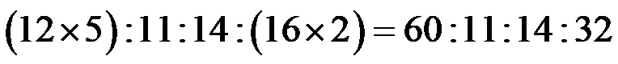
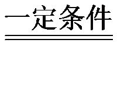

2024年北京市中考化学真题 · 选择题 第16、17、18、19、20题 · 对应解析
16. 秋分吃桂花糕。桂花中含甜菜碱（ ），下列关于的说法正确的是
），下列关于的说法正确的是
A. 由三种元素组成B. 氢、氮元素质量比为11：14
C. 氢元素的质量分数最大D. 碳、氧原子个数比为2：5
【答案】B
【解析】
【详解】A、由化学式可知，甜菜碱由C、H、N、O四种元素组成，不符合题意；
B、由化学式可知，甜菜碱中氢、氮元素的质量比为：11:14，符合题意；
C、甜菜碱中C、H、N、O元素的质量比为：

，故碳元素的质量分数最大，不符合题意；D、由化学式可知，甜菜碱分子中碳、氧原子个数比为：5:2，不符合题意。
故选B。
为实现“双碳”目标，我国积极推动能源绿色低碳安全高效转型。
17. 下列燃料在 中充分燃烧时，不会产生
中充分燃烧时，不会产生 的是
的是
A.  B. COC.
B. COC.  D.
D. 
【答案】D
【解析】
【详解】A、甲烷充分燃烧生成二氧化碳和水，不符合题意；
B、一氧化碳充分燃烧生成二氧化碳，不符合题意；
C、乙醇充分燃烧生成二氧化碳和水，不符合题意；
D、氢气燃烧生成水，符合题意。
故选D。
18. 为实现高效光催化分解水制氢，科研人员开展 纳米复合光催化材料的研究。铌（Nb）在元素周期表中的原子序数是41，下列关于Nb的说法不正确的是
纳米复合光催化材料的研究。铌（Nb）在元素周期表中的原子序数是41，下列关于Nb的说法不正确的是
A. 质子数是41B. 核电荷数是41C. 原子质量是41D. 核外电子数是41
【答案】C
【解析】
【详解】A、原子序数=质子数，铌（Nb）的原子序数是41，则质子数是41，说法正确，不符合题意；
B、原子序数=核电荷数，铌（Nb）的原子序数是41，则核电荷数是41，说法正确，不符合题意；
C、原子质量约等于质子数加中子数，根据铌（Nb）的原子序数是41，不能确定原子质量是 41，说法错误，符合题意；
D、原子序数=核外电子数，铌（Nb）的原子序数是41，则核外电子数是41，说法正确，不符合题意。
故选C。
19. 与在一定条件下反应生成和CO，该制氢反应的微观示意图如图所示：

图中丁的微观图示为
A
 B.
B.  C.
C.  D.
D. 
【答案】D
【解析】
【详解】与在一定条件下反应生成和CO，该反应的化学方程式为 CH₄ + CO₂

2H₂ + 2CO。根据方程式和微观示意图可知，丁中含有2个一氧化碳分子，1个一氧化碳由一个碳原子和一个氧原子构成，图中丁的微观图示为。故选D。
20. 甲烷水蒸气重整制氢的反应为 ，下列说法不正确的是
，下列说法不正确的是
A. 反应涉及两种氧化物B. 反应前后氢原子个数不变
C. 生成的CO、的分子个数比为1：1D. 参加反应的、 的质量比为8：9
的质量比为8：9
【答案】C
【解析】
【详解】A、氧化物是由两种元素组成，其中一种元素是氧元素的化合物，反应中有甲烷（CH4）和水（H2O），一氧化碳（CO）和氢气（H2）生成，其中水和一氧化碳属于氧化物，说法正确，不符合题意；
B、根据质量守恒定律，反应前后原子种类和数目不变，氢原子个数不变，说法正确，不符合题意；
C、根据化学方程式可知，生成的 CO 和 H2的分子个数比为 1:3，而不是 1:1，说法错误，符合题意；
D、根据化学方程式可知，参加反应的 CH4、H2O 的质量比=（12+1×4）：（1×2+16）=16:18=8:9，说法正确，不符合题意。
故选C。
硼酸在生产生活中有广泛应用。20℃时，进行如下实验。完成下面小题。

资料：20℃时，硼酸的溶解度为5.0g；40℃时，硼酸的溶解度为8.7g。